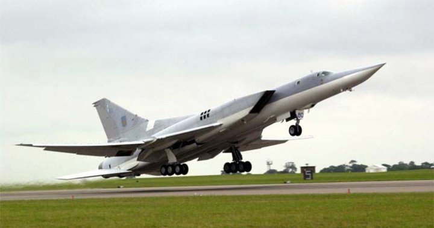

Ту-22М3 (Backfire)
Сверхзвуковой дальний бомбардировщик «Ту-22М3» предназначен для поражения целей по всему евразийскому континенту и в близлежащих морях.
Недавно бомбардировщики прошли модернизацию и получили совершенно новую бортовую электронику.
Проведенная модернизация повысила возможности бомбардировщика в прорыве ПВО типа «Иджис», еще модернизированный бомбардировщик часто называют убийцей ЕвроПро.
Кроме того, одно из предназначений стратега — уничтожение авианосцев. В арсенал вооружения сверхзвукового бомбардировщика введена крылатая ракета Х-32,
развивающая скорость более 4000 километров в час, обладающая дальностью полета до 1000 километров.
Скорость самого бомбардировщика-ракетоносца достигает 2300 км/ч.
Самолеты семейства «Ту-22М» состояли на вооружении ВВС Украины.
Однако на данный момент Украина демонтировала все свои 60 «Ту-22М» (17 «Ту-22М2» и 43 «Ту-22М3»).